Learning Goals
At the end of this Tutorial, you will be able to:
- Set up a free Vercel hosting account.
- Link your Git repositories to Vercel to support a continuous deployment workflow for your web and JavaScript projects.
Introduction
In Semester 1, you built HTML/CSS projects and manually uploaded them to GitHub to share them with the world. Now you will use a more powerful workflow called Continuous Deployment.
You will learn how to use Git to track your code changes. And you will also move your hosting to Vercel, a platform that automatically deploys your live website whenever you save and push your code.
One project, one repository
You will build multiple JavaScript projects, each with its own Git repository, making it easier to manage and showcase your work.
As a first step, in the root of your computer's folder structure, create a new folder to group and store all your JavaScript projects.
Name it as 📁 javascript-projects or similar.
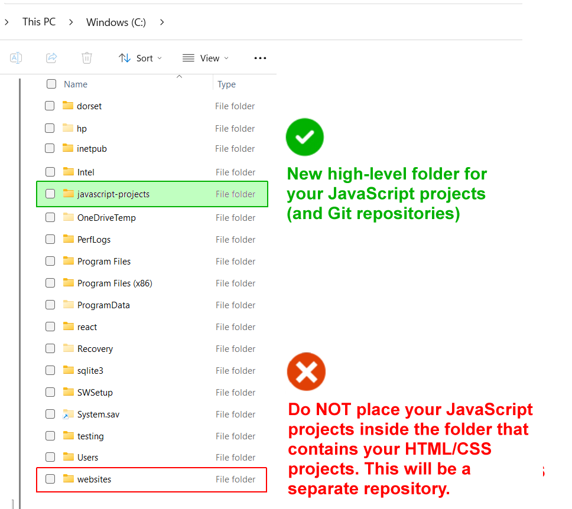
Do not put your javascript-projects folder inside other folders, including your 📁 websites folder that contains your HTML/CSS projects from Semester 1.
Inside your 📁 javascript-projects folder, create a new subfolder for each new project.
For example, if you are creating a To Do list project:
- Create a subfolder named 📁 todo-list in your 📁 javascript-projects folder.
- Build your project inside this 📁 todo-list folder.
- Create a Git repository named todo-list just for that project.
DO NOT type upper-case letters. Type weather-api or to-do-list-project.
DO NOT type blank spaces, such as 'my calculator project'.
Note: Do not make a repository of your parent 📁 javascript-projects folder. If you do, Git will try to track all your individual JavaScript projects as one giant project.
Your goal is to have each JavaScript project inside its own Git repo.
The purpose of the 📁 javascript-projects folder is simply to group all your JavaScript projects in one place, making it easier for you to locate them.
Here are some benefits of this one project, one repo approach:
- Individual deployment: You can update one project without touching the others.
- Resume ready: When you apply for jobs, you can send a link to a specific project repo rather than forcing a recruiter to dig through a giant "everything" folder.
- READMEs: Each project can have its own README.md file explaining the specific JavaScript logic used in that project.
Converting your HTML/CSS website to a Git repository
Before creating any JavaScript projects, let's convert the website folders and files you worked with in Semester 1 into a Git repository which you will host on the Vercel platform.
Currently, if you are asked "What is the address of your website?", your answer is:
https://username.github.io
After setting up a Vercel account, the answer will be:
https://username.vercel.app
Note that your Vercel username will in fact be the name of the Vercel project you have chosen for your website 'home' web pages.
Your original GitHub Pages web address will still work, but a Vercel address looks more professional to future employers.
Here are the steps to follow:
- In VS Code, choose File | Open Folder to select your 📁 websites folder (or whatever name you gave to the folder that stores your HTML/CSS projects).
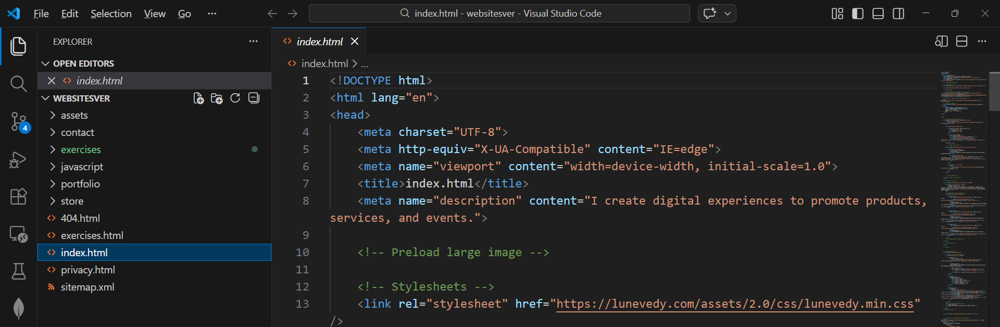
If you need to 'tidy up' your folders and files, now is a good time to do so. - Open a terminal in VS Code and check you are INSIDE your websites folder. When you type
dir(Windows) orls(Mac/Linux), you should see a list similar to that below.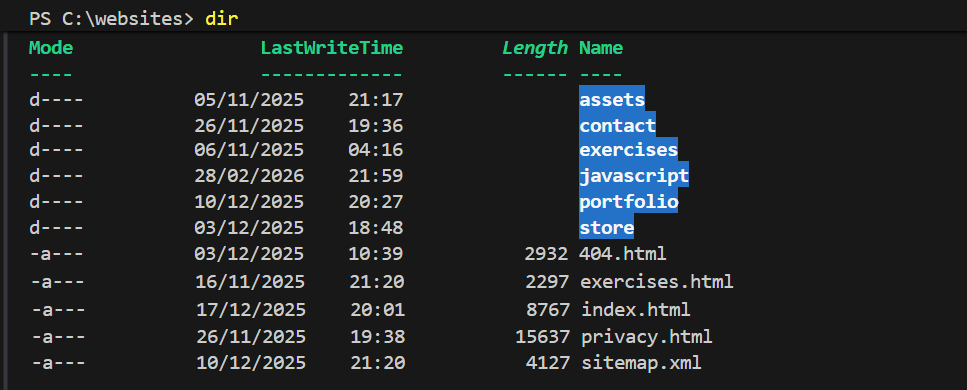
If you don't see the above, navigate to the correct folder. - When you are 100% sure you are in the correct folder, run these commands.
git init git add . git commit -m "Convert to Git repository"
This turns your 📁 websites folder into a Git repository by creating a hidden .git folder inside it. It will also add all your project files to the staging area and commit them with a message.
You have completed the first step in using Git to track any future changes to the website you completed in Semester 1.
Linking to a remote GitHub repository
Next, link your local Git repo to a remote repo on GitHub. Follow these steps:
- Log in to your GitHub account and create a new repository named frontend or similar.
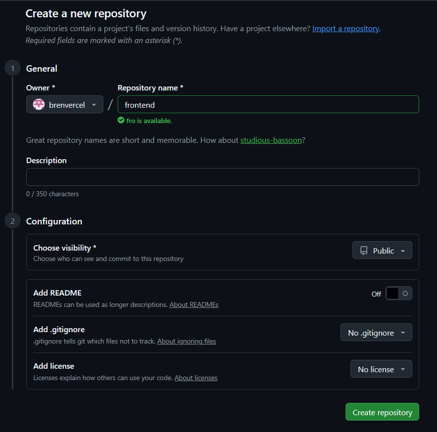
Keep your new repository Public. Do not initialise the repository with a README, .gitignore, or license. You want an entirely empty repository because you already have your files locally. By leaving the new remote repository completely empty, you avoid any merge conflict clashes. Your local commits will push cleanly because there is nothing on GitHub to conflict with them. - Click Create repository.
On your repository page, GitHub will now show you several commands. You only need the three commands under the heading "…or push an existing repository from the command line".
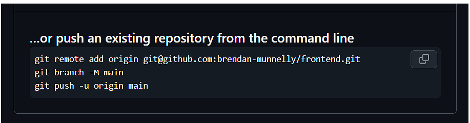
In your VS Code terminal, copy and paste these three lines one-by-one (replace username and repo-name with your actual details):
git remote add origin https://github.com/username/repo-name.gitIn the above command, you can omit the final .git. If you already have an origin remote set, update it with this command:
git remote set-url origin https://github.com/username/repo-name.gitNow, run this command:
git branch -M mainAnd, now, this command:
git push -u origin mainAfter running the above command, GitHub should show your files and your commit messages.
By running these commands one-by-one, you will be able to respond better to any configuration or authorisation issues.
You have now successfully pushed your local repository to GitHub. Your GitHub repo should now look like that below:
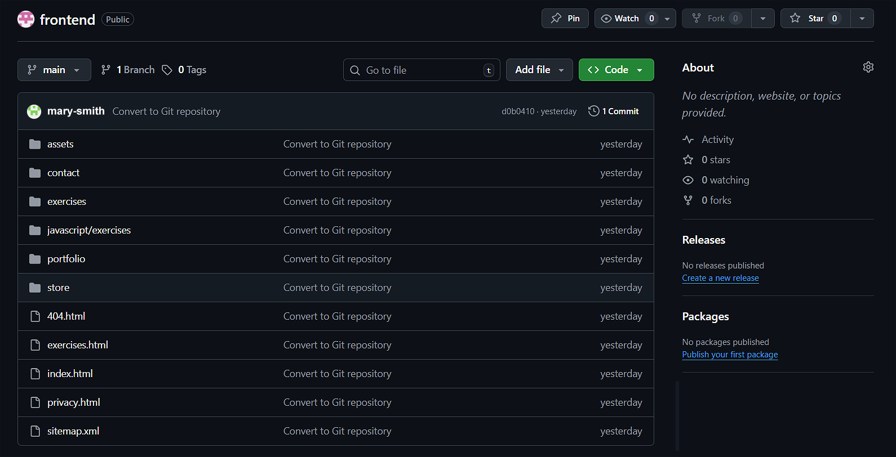
Open your browser and go to https://username.github.io to verify your website still displays and works as before.
Choosing a Vercel subdomain for your website
Every project you publish on Vercel gets a unique URL in the format below, where you can choose the subdomain.
https://subdomain.vercel.app
The new frontend Git repo you have created will be the 'home' pages of your Vercel-hosted website. As a developer, you want a URL that looks good on a resume or a LinkedIn profile.
Here are some guidelines to follow:
- Keep it short: Ideally, it should be your name or a variation of it.
- Lowercase only: While URLs aren't always case-sensitive, lowercase is the web standard for subdomains.
- Use hyphens, not underscores: Use mary-smith, not mary_smith. Search engines and browser address bars prefer hyphens.
- Avoid "student" labels: Don't use mary-assignment-1. Use mary-smith or smith-dev.
You could use an AI service to guide you.
My name is [full name]. I am registering an account with Vercel to showcase a collection of my portfolio projects. Suggest some subdomain choices that will look professional on my resume and Linkedin.Registering with Vercel
Now that your code is managed by Git and hosted on GitHub, you are ready to use Vercel. This service will host your website for free and—more importantly—it will update your site automatically every time you push new code.
Here are the steps:
- Go to https://vercel.com and click Sign Up.
- Choose Hobby (the Free Tier).
- Enter your name and click Continue.
- Select Continue with GitHub.
- Use your GitHub login.
- You may be asked to verify your account via a code sent to your email or a phone number. Follow those steps to reach the Vercel Dashboard.
Granting Vercel access to your repository
Once you are logged into your dashboard, you need to tell Vercel which "frontend" project to put online.
- Near the top-right of the screen, click the Add New button and select Project from the dropdown list.
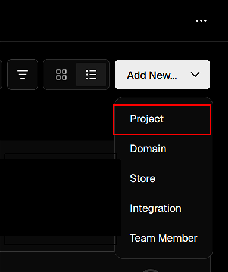
- Near the top of the New projects screen, Vercel shows a search box to help you quickly find the GitHub repo you want to import.
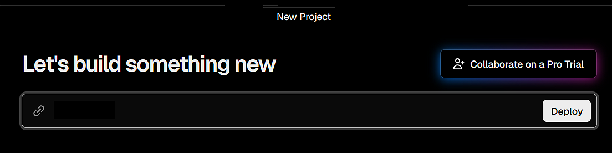
- Under the Import Git repository heading, you will see a list of the repos you have authorised Vercel to access.
- Click the Import button beside the repo that contains your frontend project (or whatever you have called it).
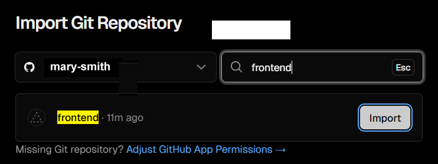
If you don't see your repo listed, see this section - Next, you will see a screen with some configuration options.
At the top of this screen, under Importing from GitHub, check you have selected the correct repo.
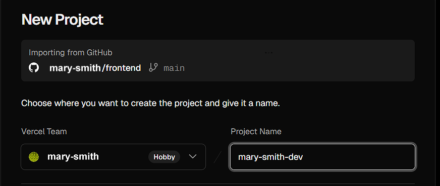
Also check that you are happy with your Project Name, which will become the subdomain of the project URL. For example, if your Project Name is mary-smith-dev, your URL will be https://mary-smith-dev.vercel.app. - Accept the defaults for the remaining options.
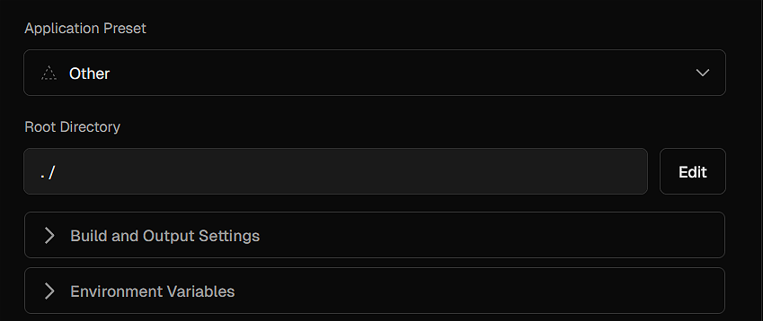
- Finally, click Deploy.
You will see a 'building' screen while Vercel copies your code from GitHub, sets up a server, and makes your project live.
Once finished, Vercel will show a preview of your site. Click the image to visit your new live URL.
You can click Continue to Dashboard to return to your main Vercel screen, where you can see details of all your projects.
Check your deployment
Now, run this check to verify everything is working correctly.
- Go back to VS Code and change a small piece of text, and save the file.
- Then, in your terminal, run the following:
git add . git commit -m "Test Vercel" git push - Go to your Vercel project URL. Wait about 10 seconds while Vercel rebuilds your project, and refresh the page. You should see your changes live on the Internet.
Rolling back a deployment
As part of a continuous deployment workflow, you will be regularly deploying updates and fixes.
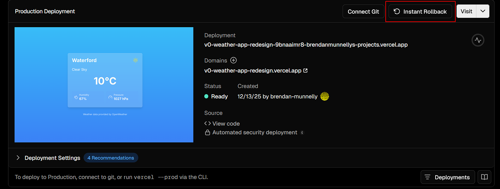
Vercel allows you to roll back to a previous deployment if something goes wrong. This ensures that you can quickly restore a stable version of your project.
While Vercel is showing a previous working deployment, you can then fix the error in your code and push the updates to trigger a new Vercel deployment.
Not seeing your repository in Vercel?
If, when trying to import a GitHub repository, you don't see your repo, there may be a number of reasons:
- Your repository is marked Private and Vercel doesn't have permission to access it. Switch to GitHub and change your repo to Public.
- You haven't authorised Vercel to access your GitHub account or specific repositories.
Switch to your GitHub account and, at the top right of your screen, click your profile icon to see a dropdown menu, and click Settings.
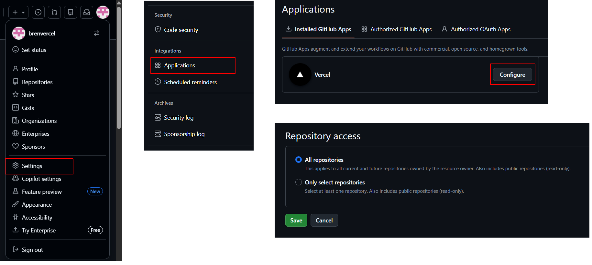
In the left sidebar of the new GitHub screen, under Integrations, click Applications. Next, under Installed GitHub Apps, you should see Vercel listed. If you don't see Vercel listed, it means you haven't authorised it yet. If Vercel is listed, click Configure to authorise Vercel to access one or all of your repos, and click Save. - Another possibility is that you have multiple GitHub accounts and Vercel is connected to a different account than the one that contains the repo you want to import. Click the three dots ... next to your profile name at the bottom-left of a Vercel screen and then click your name at the top of the menu shown. Next, choose Settings > Authentication or Login Connections. You will see a GitHub connection. Click the three dots beside it, choose Disconnect and then Reconnect while logged into the GitHub account you intend to use.
Note that there may be a delay in syncing your GitHub repositories with Vercel.
Your JavaScript project workflow
For the individual JavaScript projects you will be building, follow this build and deploy workflow:
- Create a project subfolder: Inside your 📁 javascript-projects folder, or whatever folder you are using to group together your JavaScript projects, create a subfolder. For example, javascript-projects/project-name-1. Remember: one project, one folder.
- Create a Git repo: Make the project folder a Git repo and push to GitHub.
git init git add . git commit -m "Initial commit" - Create a new GitHub repo and push: Run these commands (replace username and repo-name with your actual details):
git remote add origin https://github.com/username/repo-name.git git branch -M main git push -u origin main - Import to Vercel: In Vercel, choose Add New > Project and select your JavaScript project.
- Accept or edit the Project Name.
- For JavaScript projects, accept the default values.
- Click Import to import your new repo.
- Click Deploy to publish your project on Vercel.
Vercel will give your project a unique URL, like mary-weather-app.vercel.app.